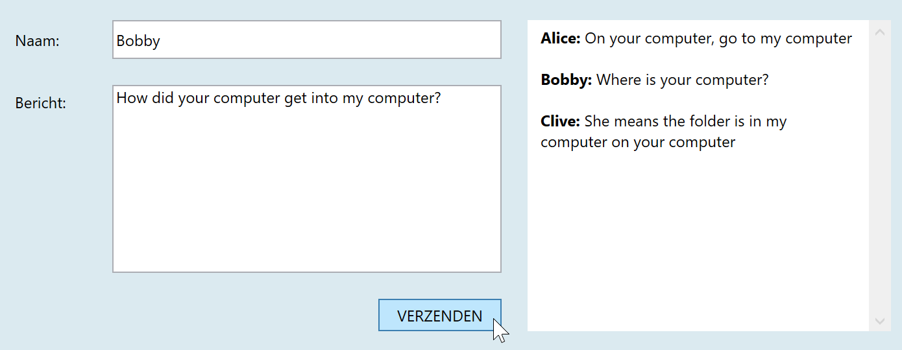

Doel: tekst over meerdere regels van een TextBox met TextWrapping en AcceptsReturn properties. Tekstopmaak in een TextBlock met Bold.
Het grootste deel van de XAML is reeds gegeven. Vul aan:
TextBox meerdere regels te kunnen typen, heb je twee attributen nodig: AcceptsReturn="True" en TextWrapping="Wrap". Voeg ze toe in de XAML.TextBlock met ScrollViewer. Let op dat attributen als Grid.Column en Margin naar de ScrollViewer moeten verplaatst worden.Click-event aan de Button.